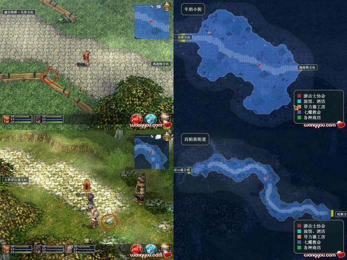
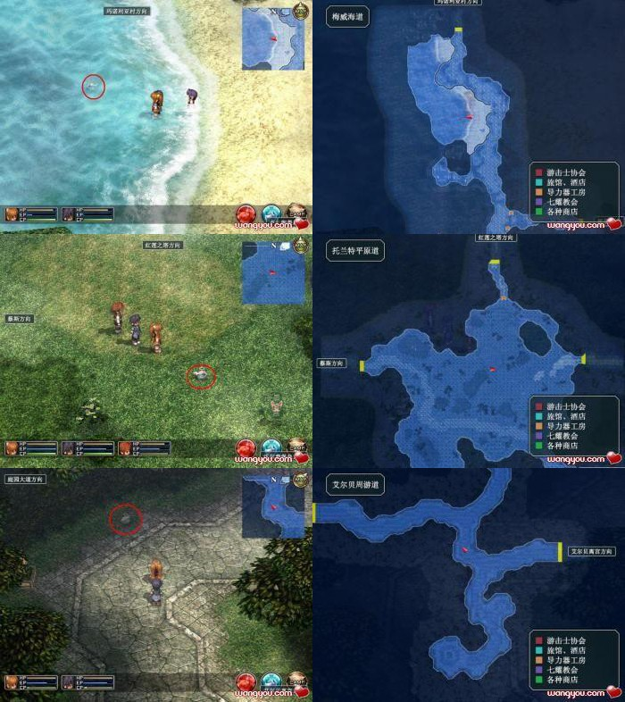

空之轨迹FC全要素收集
这个页面将按顺序提供以下要素的收集方法
红曜石; 全料理收集; 天使羊波波; 全BP整理
红曜石收集
| 卷数 | 入手方式 |
| 第１卷 | 研修结束后，与洛连特民家里的雷特拉对话可得到。另柏斯(柏斯超市)有售。 |
| 第２卷 | 一章开始时，与守卫威尔特桥的士兵哈罗德对话可得到。另柏斯(柏斯超市)有售。 |
| 第３卷 | 在得知摩尔根将军回来后，与哈肯大门酒吧中的马尔科对话可得到。 |
| 第４卷 | 准备前往瓦雷利亚湖时，去柏斯超市与里布罗对话可得到。 |
| 第５卷 | 学园祭结束后，去玛诺利亚村前，与卢安市的玛奇尔达对话可得到。 |
| 第６卷 | 第三章开始时，去杰尼丝王立学院社团大楼资料室找帕布对话可得到。 |
| 第７卷 | 中央工房事件后，立即去沃尔费堡垒，与布鲁诺对话可得到。 |
| 第８卷 | 进入终章，返回艾尔·雷登关所，与一楼接待士兵奥塔对话可得到。 |
| 第９卷 | 终章一开始，尽快去格鲁纳门找士兵塞维安对话可得到。 |
| 第10卷 | 剧情到夜晚去大圣堂时，先去空港与在那的拉尔夫对话可得到。 |
| 第11卷 | 武术大会第三天，与王都东区的安敦对话，让他看到中意的女性NPC即可得到。注意场景切换后要重新来过。 |
收集到整套的红耀石后，解放离宫前到巴拉尔咖啡厅可以跟店长巴拉尔换到「太极棍」（小艾用）或「黑千鸟、白千鸟」（小约用）其中之一
全料理收集
大盘料理
携带料理
|
天使羊波波的位置


全BP整理
序章 父亲、启程
(总任务数：7 + 9 = 16，55 BP)
（主线）实地研修回收宝物 BP：1
（主线）保护孩子们 BP：3 + 1（和约修亚一起出击+1）
（主线）剿灭帕赛尔农场的魔兽 BP：1 + 2（没有捕捉失败+2/失败一次+1）
（主线）克劳斯市长的委托 BP：4
（主线）记者们的向导 BP：4
（主线）市长官邸的强盗事件 BP：6 + 5(七耀石,团伙,2楼阳台,旅行者+4，唔……只好忍一下+1)
（主线）市长官邸的强盗事件② BP：－
（支线）寻找发光的石头 BP：2
（支线）牛奶小街的通缉魔兽 BP：3
（支线）更换路灯 BP：3 + 1（开锁密码输入成功或交给约修亚来更换+1）
（支线）训练士兵 BP：3 + 2（战斗胜利+2）
（支线）采蘑菇 BP：3
（支线）采集药材 BP：3
（支线）寻找小猫 BP：2
（支线）艾利兹街道通缉魔兽 BP：4
（支线）送亲笔信 BP：2
==================================
第一章 消失的定期船
(总任务数：5 + 11 = 16，64 BP)
（主线）定期船失踪事件 BP：5 + 3（空贼据点在特殊的地方+3）
（主线）定期船失踪事件② BP：－
（主线）南街区的强盗事件 BP：10
（主线）南街区的强盗事件② BP：－
（主线）南街区的强盗事件③ BP：－
（支线）收集食物材料 BP：3
（支线）东柏斯街道的通缉魔兽 BP：4
（支线）搜寻山道的魔兽 BP：4
（支线）迷雾峡谷的通缉魔兽 BP：5
（支线）调查熊刺草 BP：4
（支线）安塞尔新街的通缉魔兽 BP：5
（支线）护卫委托 BP：4 + 1（正面突破+1）
（支线）西柏斯街道的通缉魔兽 BP：4
（支线）被盗的戒指 BP：3
（隐藏）琥珀之塔的可疑人物 BP：4
（隐藏）黑色笔记本 BP：5
==================================
第二章 白花恋诗
(总任务数：5 + 11 = 16，79 BP)
（主线）古罗尼山顶的魔兽 BP：2
（主线）玛西亚孤儿院火灾调查 BP：5 + 4（人为纵火案+2，仓库一带的流氓+2）
（主线）玛西亚孤儿院火灾调查② BP：－
（主线）参加学院祭 BP：5 + 5（完成隐藏Ａ+3，隐藏Ｂ+1，隐藏Ｃ+1）
（主线）特蕾莎老师被袭事件 BP：10
（支线）梅威海道的通缉魔兽 BP：4
（支线）搜寻试制品 BP：3
（支线）阿伊纳街道的通缉魔兽 BP：4
（支线）仓库的钥匙 BP：2
（支线）运送维修工具箱 BP：4
（支线）调查古地图 BP：3 + 2（进卢安前救过吉米+2）
（支线）护送上山的叔父 BP：5
（支线）烛台失窃事件 BP：7
（支线）说服旅行者 BP：3 + 2（②①①②说服成功+2）
（支线）梅威海道的通缉魔兽② BP：5
（隐藏）扫荡灯塔的魔兽 BP：4
（隐藏Ａ）剿灭旧校舍的魔兽 BP：3
（隐藏Ｂ）装饰校园 BP：1
（隐藏Ｃ）收集研究资料 BP：1
（上面三个隐藏任务不计入完成任务数）
==================================
第三章 黑色的导力器
(总任务数：6 + 13 = 19，92 BP)
（主线）调查黑色导力器 BP：－
（主线）修理亚尔摩温泉的水泵 BP：5
（主线）中央工房受袭事件 BP：6 + 8（拆5个发烟筒+5，黑衣人有关+3）
（主线）中央工房受袭事件② BP：－
（主线）寻找拉赛尔博士 BP：10 + 6（亲卫队被栽赃+3，潜入司令部前没有被士兵发现+3）
（主线）寻找拉赛尔博士② BP：－
（支线）募集临时图书馆员 BP：3
（支线）托兰特平原道的通缉魔兽 BP：4
（支线）测试新产品 BP：4 + 2（以下地方去4个以上+2：亚尔摩村，艾尔雷登，雷斯顿要塞，圣海姆门，沃尔费堡垒）
（支线）寻找运输车 BP：4
（支线）寻找新奇食材 BP：3
（支线）禁烟强化周 BP：4
（支线）利塔街道的通缉魔兽 BP：5
（支线）利塔街道的通缉魔兽② BP：6
（隐藏）临时图书馆员的加班 BP：3
（隐藏）临时图书馆员的加班② BP：4
（隐藏）临时图书馆员的加班③ BP：4
（隐藏）修理运输车 BP：5
（隐藏）爱之使者 BP：2 + 4（送绒毛编织帽+4）
==================================
终章 王宫撩乱
(总任务数：11 + 3 = 14，78 BP)
（主线）给艾莉茜亚女王的传话 BP：10 + 8(扣下介绍信+1,理查德+2,去大圣堂没被士兵发现+5）
（主线）给艾莉茜亚女王的传话② BP：－
（主线）给艾莉茜亚女王的传话③ BP：－
（主线）给艾莉茜亚女王的传话④ BP：－
（主线）给艾莉茜亚女王的传话⑤ BP：－
（主线）给艾莉茜亚女王的传话⑥ BP：－
（主线）人质解救作战 BP：10 + 4（有人叫他出去+2，科洛蒂娅公主婚姻的相关事宜+2）
（主线）人质解救作战② BP：－
（主线）女王陛下营救作战 BP：10 + 5（不伤害杜南前提下消灭3名特务兵+2,洛伦斯战胜利+3）
（主线）女王陛下营救作战② BP：－
（主线）辉之环 BP：12
（支线）地下水路西区的通缉魔兽 BP：8
（支线）地下水路东区的通缉魔兽 BP：8
（支线）帝国大使馆的委托 BP：3
==================================
统计：(总任务数：34 + 47 = 81，368 BP)